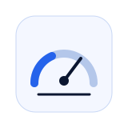
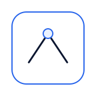
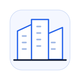

Ressources
Tout comprendre sur la gestion des avis.
Guides pratiques, analyses et cas concrets pour détecter, gérer et protéger votre réputation en ligne.
Explorer la bibliothèque
Par où souhaitez-vous commencer ?
Choisissez un thème pour retrouver tous les articles associés.
Avis fictifs
Repérez les signaux d’un avis potentiellement fictif.
02Avis négatifs
Analysez les critiques et choisissez la bonne réponse.
03Répondre aux avis
Rédigez des réponses utiles, claires et professionnelles.
04Google Reviews
Comprenez les règles, signalements et recours Google.

05Score de suspicion
Évaluez les signaux sans confondre suspicion et preuve.

06Signalement
Préparez un signalement documenté et pertinent.
07E-réputation
Suivez et protégez la réputation de votre entreprise.
08IA et avis
Explorez les usages, limites et contrôles de l’intelligence artificielle.
09Crise réputationnelle
Organisez votre réponse face à une vague d’avis.
10Preuves et dossiers
Conservez les éléments utiles de façon claire et chronologique.

11Multi-établissements
Pilotez les avis et la réputation de plusieurs sites.
12Règles et limites
Maîtrisez les bonnes pratiques et les limites juridiques.
13Cas concrets
Découvrez des situations pratiques et les décisions possibles.
Aucune catégorie ne correspond à votre recherche. Essayez un autre terme.